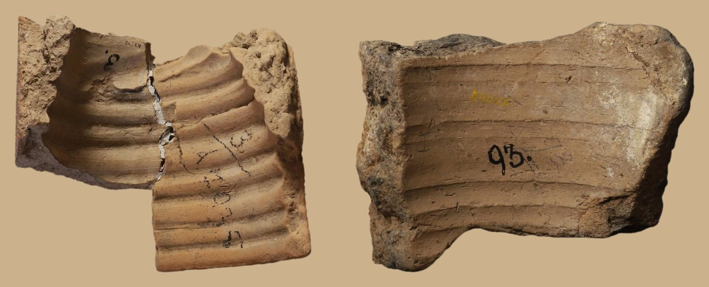

With ISAC’s Tablet Collection team I photograph, photoshop, catalogue and read cuneiform objects. I also conduct my own research, like the projects below:
Ashurbanipal's Prisms
Ashurbanipal, the last great king of the Neo-Assyrian empire, recorded his campaigns and building works on many-sided clay prisms. ISAC holds fragments that were bought in Baghdad in 1919–1920 and carried back to Chicago.
The goal was to photograph each fragment so its color, texture, shape and inscription read accurately, leveling pieces on foam and lighting them from the upper left so the wedges stand out.
The photos I took revealed how the prisms were made: a thick core of plant-tempered clay under a cleaner outer layer, perforations for mounting on a spindle, rulings pressed with strings or styli, and bodies that were either coiled or formed on a wheel.

Kassite tablets from Nippur
For the Nippur publication project I transliterate, translate and hand-copy tablets from a 13th-century BCE private archive excavated at Nippur. The archive now stands at 24 tablets.
← All projects